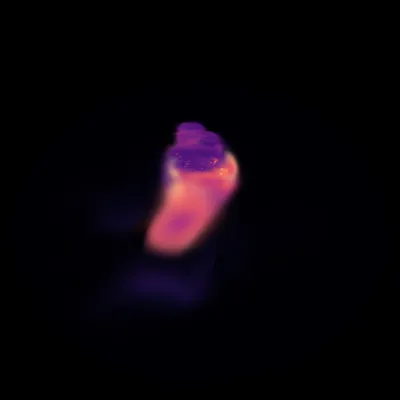
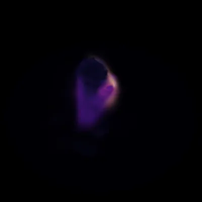
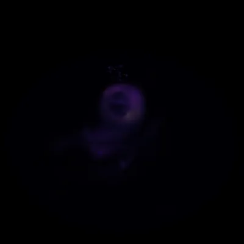
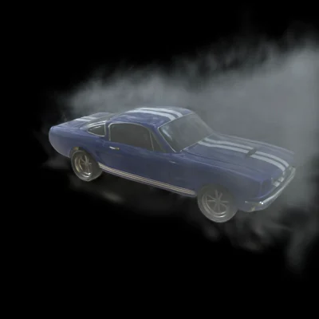

Reconstruct What You CanDistractor-Free 4D Gaussian Splatting
Drag the two dividers to resize Input, Jacobian uncertainty, and Reconstruction within the same view.
A video could not load. Reload the page to try again.
Read the deformation.
Separate the distractions.
A moving subject and a passing occluder can both move quickly. Rather than filtering by speed, ReCan-GS examines how its learned deformation field responds to position and time.
Our key contribution is Jacobian-derived uncertainty. We turn variation among deformation gradients into a per-Gaussian sensitivity score. This signal guides separation into a dynamic Core and per-view Distractor layers, without pretrained segmenters or an external uncertainty network.
Read the full abstract
Dynamic 4D reconstruction from casual video faces a fundamental question: what should the model reconstruct, and what should it refuse to explain? Real-world sequences contain occluders, reflections, shadows, flicker, and evolving volumetric media that violate the assumptions of a single coherent 4D scene model. Existing methods either suppress valid motion through static-scene assumptions or model every observation jointly, causing ghosting, unstable geometry, and corrupted dynamics. We introduce ReCan-GS, a reconstructability-routed 4D Gaussian Splatting framework that separates coherent scene content from observations that induce inconsistent deformation constraints. Instead of detecting distractors by appearance, semantics, photometric error, or speed, ReCan-GS derives a Jacobian-based uncertainty score directly from the learned deformation field. This analytic signal routes geometrically and temporally consistent observations into a persistent 4D scene representation, while isolating high-uncertainty residuals before they contaminate the reconstruction. A single deformation-space criterion handles spatial occluders, photometric artifacts, and temporally evolving smoke or fog without masks, pretrained segmenters, or medium-specific supervision. Experiments on synthetic and real dynamic scenes, together with dynamic smoke/fog removal in static scenes, show that a single deformation-space criterion supports clean reconstruction across diverse distractor regimes.
How it works.
Jacobian uncertainty guides the separation
of coherent dynamics and transient content.
Differentiate the deformation. The Jacobian captures how learned position, rotation, and scale offsets respond to canonical position and time. Gradient covariance provides a per-Gaussian sensitivity score.
Route or prune with that score. Regularize uncertain, opaque Core Gaussians during training, or prune high-scoring Gaussians afterward.
No extra model at render time. Only the retained Core is rendered. The Jacobian computation is a training-time cost.
The Jacobian score is an empirical proxy for deformation instability. Stable distractors may remain, and poorly observed valid motion may be removed.
Jacobian-derived uncertainty.
A model-internal cue for deformation instability.
Different from motion magnitude alone.
The score summarizes variation among gradients of the learned deformation offsets. Brighter regions have higher Jacobian scores. In this experiment, the signal localizes the transient more selectively than raw motion magnitude.
On 534 distractor-containing Bottle frames, the Jacobian score better localizes the transient than motion magnitude. SAM masks are used for evaluation only.
How is the score computed?
For each Core Gaussian, differentiate the predicted position, rotation, and scale offsets with respect to canonical position and time. For each offset type, take the trace of the sample covariance of the Jacobian’s rows, then sum the three contributions.
This is a sensitivity-based routing signal, not a calibrated probability of being a distractor. Stable transients and poorly observed valid motion remain challenging.
More views. Less ambiguity.
A controlled test of camera coverage and motion speed.
Each column shows a reconstruction using one, two, or three camera views of the moving ball. The colors show the Jacobian-derived score: dark regions have lower uncertainty, while brighter regions have higher scores.
A single view leaves more possible 3D motions consistent with the images. Additional views constrain the learned deformation, and the score generally decreases, even when the ball moves quickly. This experiment helps distinguish the effect of limited visual support from motion speed alone.
Try it: Select slow or fast motion, then drag the slider to compare the same moment across all three reconstructions.



See through
the smoke.
Even slowly evolving smoke can be inconsistent across views. The same Jacobian-derived uncertainty signal helps recover the underlying static object. Inspect the assigned uncertainty alongside the smoky input, or switch to the cleaned reconstruction.
Actual reconstructions on four synthetic SmokeSeer scenes. Residual haze and reconstruction errors remain.

Recorded threshold sweepBrighter colors indicate higher Jacobian scores. Compare the uncertainty map with the visible smoke at the same moment.
More dynamic scenes.
Compare real and synthetic sequences
with dynamic reconstruction baselines.
Matched reconstruction views of a stop-motion Jeep. ReCan-GS removes transient hands and reduces moving-shadow artifacts. Choose DeformableGS or 4DGS to compare the same viewpoint.
This video could not load. Try another scene or reload the page.
Cleaner scenes.
A measurable trade-off.
Reconstruction quality and distractor retention
measure different parts of the problem.
ReCan-GS leads DeformableGS on two of four dynamic scenes and trails on two. The larger distinction is how much transient content remains in the reconstruction.
0%of human ratings found a substantial
distractor in the ReCan-GS Jeep renders.
Three annotators, 50 frames per method. “Substantial” means a severity rating ≥ 3 on a 1–5 scale. This evaluates retained distractors, not target completeness.
| Scene | DeformableGS | 4DGS | ReCan-GS |
|---|
Best result in each row is highlighted. Real-scene metrics use distractor-free holdouts. Table 2 in the paper.
Citation
@inproceedings{julin2027recan,
title = {Reconstruct What You Can: Distractor-Free
4D Gaussian Splatting},
author = {Julin, Joel and Xie, Liuyue and Bal, Ananya and
Sakashita, Mose and Niinuma, Koichiro and
Jeni, Laszlo A.},
booktitle = {Proceedings of the IEEE/CVF Winter Conference
on Applications of Computer Vision (WACV)},
year = {2027}
}ReCan-GS · Reconstruct What You Can